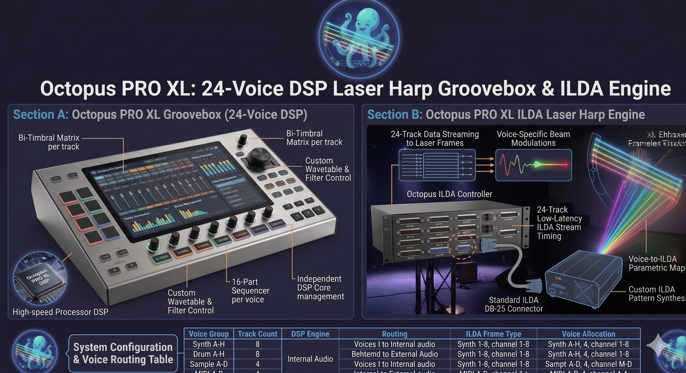

A stand-alone live-performance instrument built on the ESP32-P4 (32 MB PSRAM) with a
10″ multi-touch front panel: an
8-beam reflective scanning laser harp, a 24-voice bi-timbral
synth + drum groovebox, a 16×16 polyphonic matrix sequencer
with song chains and built-in arpeggiators, a studio FX rack, and a
zero-install OctopusApp Web MIDI console — all in one box.
ESP-P4 Edition
The most advanced Octopus PRO XL hardware upgrade — built for ultimate live performance: ESP32-P4, 32 MB PSRAM, 10″ multi-touch, and full stage I/O in one premium chassis.
The Octopus PRO XL is designed for solo live shows: play the laser
harp with your hands while the sequencer drives a bassline and drum groove underneath, all colouring the room with
note-reactive laser light — no laptop required.
Play the Light
Eight visible laser beams form the harp "strings". Breaking a beam triggers a polyphonic wavetable voice and lights that beam in its own colour.
Groove Underneath
A second synth engine and an 8-voice drum machine run from the 16×16 pad matrix (8 synth + 8 drum rows), locked to one tempo, so a full track grooves while you solo.
Tweak from the Browser
Plug in over USB and OctopusApp becomes your full editor — every synth/drum parameter, the 64-step grid, song chains, FX, motion P-locks, and live CPU telemetry — with settings saved back to on-board flash. Transport (play/stop/record/BPM) stays on the hardware; the app mirrors it in real time.
01. Reflective Scanning Laser Harp
A single high-speed galvanometer sweeps one laser source into a fan of 8 addressable beams —
the harp "strings". Detection is reflective and frameless: there is no top bar. The beam is amplitude-modulated
and a matched sensor picks up only that signature, so a hand is detected while stage haze and ambient light are rejected.
9.656 kHz carrier lock: The MCPWM engine modulates the beam at a carrier tuned to the sensor's MFB band-pass centre (10 MHz / 1036 = 9.652 kHz), giving rock-solid hand detection independent of room lighting.
Per-beam dynamic threshold: Each string gets its own 12-bit comparator DAC level — computed from live ADC telemetry, scale margin, per-string edge compensation, and colour multiplier. Threshold calibrates the sensor path only; the 74HC74 digital latch remains the sole note-on trigger.
Edge compensation: Independent per-string threshold trim for every scale (HARP SETUP → Edge Comp) — corrects weaker endpoint beams where the galvo reverses and overshoots; factory-seeded rows persist in NVS.
False-trigger protection: Asymmetric on/off counters require sustained breaks to note-on and sustained clears to note-off; optional fog-reject gate suppresses haze without blocking real hands; beamStuckReleaseMs fail-safe force-releases hung notes; minimum hold window via beamGateHoldMs.
Dark-move sweep: The laser is blanked while the galvo travels between string positions (200–1000 µs settle), so the fan shows clean, solid beams and solid V-edges with zero faint trailing lines or jitter.
Note-reactive RGB: Each string carries its own colour and per-string hue ADSR. With MIDI→HUE engaged, played notes paint the beams live; a dedicated Laser Show mode runs animated open/close fans.
D-BEAM expression: A proximity sensor on ADC DMA with per-string Kalman smoothing routes hand height to local harp modulation, volume, or filter cutoff — entirely internal DSP, no external MIDI CC required.
Fog reject (optional): A differential amplitude gate suppresses false triggers from stage haze/fog without affecting real hand breaks — tunable margin with a live scope view on the OLED.
Harp arpeggiator: Built-in ARP in POLY8 and SOLO modes (Up/Down/Up-Down/Random, 1/8–1/16T rates, gated patterns) — disabled automatically in STRINGS bowed mode.
POLY8STRINGS (bowed ADSR)SOLO (mono stab)HARP ARP

Galvo-swept 8-beam fan · dark-move blanking
ILDA Galvo Engine
Vector laser-show pipeline: position on MCP4922 ch A, per-beam detect threshold on ch B,
laser blanked during every galvo move (ILDA-style dark routing), then fired only at the settled string position.
> Audio DSP on Core 0 stays isolated from galvo timing
so projection stays jitter-free under full polyphony.
02. Bi-Timbral Wavetable Engine
Two independent synth engines plus a drum engine — 24 voices total (8 harp + 8 sequencer + 8 drum) — render in floating-point DSP at 44.1 kHz on Core 0, fed by 25 wavetables and 128 named presets. The open-source ESP32-S3 dev platform outputs 16-bit I2S; the limited custom ESP32-P4 build runs the same engine at 44.1 kHz with 24-bit output.
True Bi-Timbral Split
The Laser Harp engine (8 voices) and the Sequencer Synth engine (8 voices) are fully separate signal paths with their own patch, wave, scale, LFO routing and insert FX. Sequence a deep analog bassline while you play an ethereal pad over the lasers — with no note stealing between them.
Multi-Target LFO Matrix
Per engine, one LFO routes to pitch, filter, wave-morph or tremolo — singly or in combination (up to a full matrix). Each engine also carries a per-voice ADSR, resonant state-variable filter, sub/detune oscillator and an envelope→cutoff amount, all stored inside the preset.
Acoustic Emulations
Signature voices are hand-tuned for natural response: a blooming Hang Drum and plucked Kalimba playable across the keyboard, and a breath-driven Didgeridoo using noise injection and formant filter sweeps. 16 musical scales map both the keyboard and the laser strings.
24
VOICES (8+8+8)
25
WAVETABLES
128
NAMED PRESETS
16
SCALES
03. 8-Voice Drum Machine + Kits
A parametric percussion engine synthesises eight drum voices — Kick, Snare, Clap, Closed & Open Hat, Hi/Lo Tom and Perc — each with Tune, Decay, Volume and Noise, plus a selectable body wavetable on the pitched voices.
Switch the entire character instantly with 4 drum kits: the classic
TR-909, a deep TR-808, a booming Trap kit and a punchy
House kit. Each kit reloads per-voice tuning and reshapes the full synthesis character — kick pitch-sweep, a body-plus-bandpassed-rattle snare, a triple-burst bandpass clap, and 6-oscillator inharmonic metal hats — for classic, hand-tuned percussion.
The active kit name shows on the OLED dashboard and in the app.
Global drum pitch (D.PITCH): Transpose the entire drum bus independently of master pitch — in the App mixer and on hardware.
Per-engine insert sends (delay/reverb) plus shared AUX bus on the master strip.
Eight factory drum patterns, fully editable on the 64-step grid.
Kit Matrix
TR-909
Punchy click kick, crisp hats
TR-808
Deep boom kick, long tails
TRAP
Sub-heavy 808 boom, tight hats
HOUSE
Tight, bright, four-on-the-floor
04. 16×16 Polyphonic Matrix Sequencer
One 16×16 pattern matrix per bank (256 cells). On the 10″ multi-touch panel you edit the full grid on-device; OctopusApp mirrors the same matrix over USB (up to 64 steps via P1–P4). The compact previews below show the logical synth/drum split.
Both surfaces address the same slot; synth + drums always play together. Built-in melody ARP, song chains, and P-lock motion across banks A–D.
Logical split · synth rows 0–7 (compact preview)
BANK-A [SYNTH] MATRIX · rows 0–7
BANK-A [DRUM] MATRIX · rows 8–15
Same pattern slot — flip Synth / Drum page on hardware. Demo: click to toggle steps; playhead loops (preview only).
OctopusApp · full 16×16 matrix
BANK A · 16 ROWS × 16 STEPS · PLAY 1/16
Rows 0–7 synth Rows 8–15 drumsP1–P4 → 64 steps
All 16 tracks visible together — edits sync to the same hwSeqData[bank][0] as the OLED.
Sequencer grid model
Each pattern bank holds one unified slot in
hwSeqData[bank][0] — 16 rows played together every step.
The 10″ touch UI shows the full 16×16 matrix on the unit;
OctopusApp mirrors the same grid over USB (16 steps per page, P1–P4 for depth).
0–7Synth melody — 8-note polyphonic bassline / lead (sequencer voices; row r → seqVoices[r])
Banks A / B / C / D map to indices 0–3. The legacy chain dimension is
pinned to 0 everywhere — synth and drums are never separate playback slots.
On the touch panel, synth rows 0–7 and drum rows 8–15 are one matrix — same slot, same clock. OctopusApp and on-device edits are heard identically.
Matrix navigation
Enc rotate = move row · Enc click = toggle step
Scale = step left · OC = step right
Smart wrap: step 15 + right → next bank step 0 · row 7 synth + down → drum row 0 · drum row 7 + down → next bank synth
Full matrix (per bank)
Rows 0–7 · Synth
8 polyphonic melody tracks × up to 64 steps (P1–P4 in App)
Rows 8–15 · Drums
8 drum voices × up to 64 steps — same slot, same clock
Logical matrix: 16 rows × up to 64 steps · 10″ touch: full 16×16 on unit · App: mirror
Banks A–D, up to 64 steps
Four pattern banks, each holding the full 16×16 matrix (synth rows 0–7 + drum rows 8–15). Length is 16, 32, 48, or 64 steps — the App pages P1–P4 while the playhead follows the hardware STEP_SYNC clock.
Song / Chain Mode
Build up to 16 song programs with 16 steps each — chain banks A→D in any order with per-step repeats. The firmware auto-advances at pattern wrap for full arrangements without a laptop.
Melody Arpeggiator
The seq synth engine includes a built-in ARP (8 patterns including octave variants, 8 rates from 1/1 to 1/32, adjustable gate) — editable from hardware or OctopusApp while the grid keeps running underneath.
Motion Automation (P-Locks)
Arm REC and move any knob: parameter motion is captured per 16th-note step and replayed from flash — standalone, no app required after recording.
Performance Tools
Per-bank Copy / Paste, note Randomize, and Clear (with P-lock wipe), plus live transpose and octave — from hardware encoders or the web console.
Factory Patterns
Eight melodic presets (acid lines, arps, ambient cascades, growlers) and eight drum grooves (house, techno, breaks, minimal) load instantly into any bank.
Audio-Locked Clock
The step engine integrates real elapsed time inside the I2S audio loop — tempo cannot drift under CPU load, and STEP_SYNC drives the OctopusApp playhead with no competing web timer.
Signal Topology
HARP → INSERT FX A → INSERT FX B → (sum)
SEQ → INSERT FX A → INSERT FX B → (sum)
DRUMS → INSERT FX A → INSERT FX B → (sum)
AUX SENDS → REVERB + DELAY buses
MASTER → TUBE SAT → DJ FILTER → 2-BAND EQ → I2S OUT
05. Studio FX & Master Bus
Each of the three engines runs two insert FX slots (A + B) chosen from 16 studio presets — rooms, choruses, shimmers, delays and more. Global aux reverb and delay buses are fed by per-engine sends, and a master section finishes the mix.
Per-engine dual inserts: 16 character presets per slot, applied independently to harp, sequencer and drums for layered live processing.
Aux reverb + delay: Shared send buses with controllable delay time / feedback and reverb size / damping for cohesive space.
Master finish: Thunderbolt tube saturation (drive / tone / mix), a sweepable DJ low-/high-pass performance filter, and a ±12 dB two-band shelving EQ feeding the I2S DAC (16-bit on ESP32-S3 · 24-bit on the custom ESP32-P4 limited build).
16 master FX presets plus a per-engine headroom-scaled, transparent limiter that keeps dense chords and full grooves clean during live sets.
06. OctopusApp — Web MIDI Console
No installs, no drivers. Open octopus.isystem.app in Chrome or Edge, plug in USB — the App auto-connects, imports the full device state, and becomes the master editor for all parameters. Transport (play/stop/record-arm/BPM) stays on the hardware (SCALE · OC short · encoder).
MIDI runs locally in your browser (never through this website). Requires HTTPS, one open tab on Windows for full duplex echo.
Instruments View
Editors for both synth engines and laser show: ADSR, filter, OSC/detune, LFO matrix, wave, scale, patch, dual insert FX, harp ARP (POLY/SOLO), and the D-BEAM panel (route, curve, offset/range — local DSP only).
Mixer View
8×4 drum grid, kit selector, per-voice body waves, D.PITCH, insert sends, master H/S delay+reverb sends, AUX bus, tube/DJ/EQ, stereo VU, and live CPU-load readout from the device.
Sequencer View
16×16 pad matrix (8 synth + 8 drum rows), up to 64 steps (P1–P4), seq ARP, song-chain editor, pattern loaders, and a playhead locked to hardware STEP_SYNC.
Save / Load to On-Board Flash
SAVE and LOAD persist the whole session — settings, user presets, patterns, and P-lock motion — to on-board flash (NVS namespace octopus, CRC-checked blobs). SAVE reboots after the commit; Full/Banks reset reboots instantly and wipes on the next boot. Settings/Motion reset (firmware 6.1.01+) apply live with no reboot — the App just reloads and re-pulls the fresh image from hardware. Power-cycle and your set plays back standalone.
Robust Two-Way Sync
196 SysEx commands at 14-bit resolution. Auto-connect on USB; badge Octopus ON when linked. Hardware edits echo into the App; a sync supervisor re-asserts BPM/play/record if a message is dropped. App transport buttons are read-only reflectors.
Chrome or Edge · USB connected · Web MIDI + SysEx · Playhead on SEQUENCER tab
OctopusApp v6.2.07
07. Universal MIDI Controller Mode
OctopusApp is not only a mirror for Octopus PRO XL hardware. When no Octopus is connected,
the same browser App becomes a standalone MIDI controller — pick any USB MIDI interface from the port list
and drive external synths, drum machines, or a DAW with a 64-step sequencer, song chains, factory patterns,
Control Change, and Program Change.
Browser-only feature — no firmware update required. Octopus linked mode stays identical to v6.1.
When to use it
Rehearse patterns on a laptop without the laser module powered.
Sequence a hardware synth or groovebox over USB MIDI.
Sketch drum + melody ideas before moving them to Octopus hardware.
Teach or demo step sequencing with any class-compliant MIDI interface.
MIDI OUT — standard MIDI only, 2 tabs, App transport, browser storage
Laser, D-BEAM, studio mixer, user slots, and device reset are unavailable in MIDI mode so they cannot touch Octopus settings.
Octopus has hard priority: while a ★ Octopus port is connected the App locks to Octopus mode — MIDI Controller mode is available only when no Octopus is plugged in.
Sequencer tab
Same 16×16 pad matrix, banks A–D, and P1–P4 step pages (up to 64 steps). Local BPM clock, stable GPU playhead, SONG chain editor (bank + repeats per step), 🔗 song-mode playback, and factory MELODY / DRUM pattern dropdowns. Outbound note on/off per step — scale-aware melody rows and GM-style drum mapping.
Instruments tab (MIDI)
Compact dual-panel layout: Seq synth (MIDI channel, program change, 8 CC knobs in a 2×4 grid, SEQ activity scope) and drum machine (per-voice note map, DRUM activity scope). No studio mixer, laser show, or D-BEAM — those stay Octopus-hardware only.
Also in v6.2.x
Faster Settings / Motion reset (firmware 6.1.01+) — applied live with no device reboot; the App just reloads and re-pulls the fresh image. SAVE and Full / Banks+Pats reset still reboot.
Octopus hard priority — a connected ★ Octopus always takes over; MIDI Controller mode is reachable only with no Octopus plugged in.
Auto-reload on MIDI port connect — clean boot when you pick Octopus or a MIDI interface.
Session EXP/IMP — backup patterns, chains, routing, and CC maps as JSON in the browser.
Optional PayPal tip — hosted donate page (TIP / DONATE chips in the App).
MIDI output
Standard channel voice messages only — compatible with any Web MIDI device:
Note on / off — grid steps
Control Change — filter, level, mod…
Program Change — per engine
Start / Stop / Clock — optional
Beginner setup
OctopusApp runs in Google Chrome (or Edge). You do not install a plugin inside your DAW — you route MIDI from the browser into the DAW or hardware.
Firmware, OctopusApp, documentation, and release notes live in the public GitHub repository. This product page is hosted at octopus-info.isystem.app; the App is a separate subdomain for Web MIDI.
USB-only MIDI — class-compliant SysEx control plus optional channel-voice play-in. OctopusApp auto-connects on plug-in (no Connect button); transport stays on the hardware surface.
Native USB MIDI
Class-compliant USB MIDI carries OctopusApp SysEx control (0x7D App→device, 0x7C device→App) plus optional instrument play-in on configurable harp/seq/drum channels. No drivers on macOS, Windows, or Linux.
Standalone Operation
Every feature — laser harp, sequencer, drums, FX, song mode, P-locks, and NVS save — runs without a computer. Connect OctopusApp when you want deep editing; unplug and the hardware keeps performing.
ESP-P4 is the most advanced Octopus PRO XL hardware — ultimate live performance, 10″ touch, full stage I/O. Made to order; GitHub firmware targets the ESP32-S3 dev platform (44.1 kHz · 16-bit I2S). The limited custom P4 build adds 24-bit output at the same 44.1 kHz sample rate.
Limited edition · custom build
Hardware — ESP-P4 Ultimate
EditionESP-P4 · 32 MB · limited custom
ChassisAluminum extrusion · rear stage I/O
Display10″ capacitive multi-touch · full matrix UI
ControlsTouch + encoder · SCALE · OC
ProcessorESP32-P4 · dual-core DSP + laser task
Audio24 voices · 44.1 kHz · 24-bit I2S
Laser8-beam galvo RGB · top sensor · D-BEAM prox.
SoftwareOctopus v6.1.01 · 196 SysEx · NVS
Rear I/OTRS L/R out & in · USB-C (Web MIDI SysEx) · ILDA · MicroSD
HTML spec table — nothing clipped from the diagram. Engine detail below.